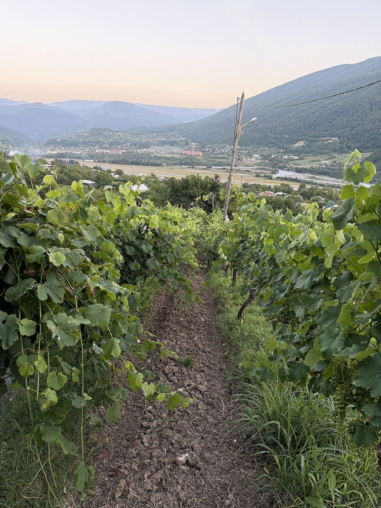

Georgia
Georgia, en el Cáucaso, es uno de los lugares con los testimonios más antiguos de elaboración de vino del mundo. Conserva una enorme diversidad de variedades autóctonas y la vinificación tradicional en qvevri, grandes tinajas de barro enterradas.

Historia
Los hallazgos arqueológicos en yacimientos neolíticos del sur de Georgia, con restos de vino en fragmentos de cerámica datados en torno al 6000 a. C., figuran entre las pruebas más antiguas conocidas de vinificación. Desde entonces el vino ha estado ligado a la vida cotidiana, a la religión y a la identidad del país. Tras la cristianización, en el siglo IV, la vid adquirió un fuerte valor simbólico: según la tradición, santa Nino, evangelizadora de Georgia, llevaba una cruz hecha con sarmientos. Monasterios como el de Alaverdi, en Kakheti, han mantenido viñedos y bodegas durante siglos.
En el siglo XIX, bajo el Imperio ruso, aristócratas georgianos como la familia Chavchavadze en Tsinandali introdujeron técnicas de vinificación de tipo europeo junto a las tradicionales. Durante el periodo soviético, Georgia fue uno de los grandes abastecedores de vino de la URSS; la producción se concentró en grandes complejos estatales, se privilegiaron el volumen y unas pocas variedades, y se popularizaron los tintos semidulces. La campaña antialcohólica de mediados de los años ochenta provocó el arranque de numerosos viñedos. Tras la independencia, en 1991, el sector se privatizó, y el embargo ruso impuesto en 2006 empujó a los productores a buscar otros mercados y a mejorar la calidad. Desde entonces han surgido numerosas bodegas familiares y se ha renovado el interés por las variedades locales y la vinificación en qvevri, que la UNESCO inscribió en 2013 en la lista del Patrimonio Cultural Inmaterial.
Clima y suelos
La cordillera del Gran Cáucaso protege al país de las masas de aire frío del norte, mientras que la cordillera de Likhi lo divide en dos grandes zonas. El oeste, abierto al mar Negro, tiene un clima húmedo y templado, de tendencia subtropical en la costa. El este, donde se encuentra Kakheti, es más seco y continental, con veranos cálidos e inviernos fríos. Los suelos son muy variados: aluviales en los valles fluviales, arcillo-calcáreos, pardos y pedregosos en las laderas.
Uvas y estilos
Georgia conserva más de quinientas variedades autóctonas, aunque solo unas decenas se cultivan comercialmente. La blanca más plantada es la Rkatsiteli, seguida por variedades como la Mtsvane Kakhuri, la Kisi y la Khikhvi en Kakheti, o la Tsolikouri, la Tsitska y la Krakhuna en el oeste. La tinta emblemática es la Saperavi, de pulpa coloreada, que da vinos profundos y ácidos; en el oeste destacan la Aleksandrouli y la Mujuretuli de Racha, con las que se elabora el semidulce Khvanchkara, y la Ojaleshi de Samegrelo.
Conviven dos grandes métodos de elaboración. En el tradicional, el mosto fermenta en el qvevri, a menudo con hollejos, pepitas y a veces raspones, y el vino puede permanecer meses en contacto con ellos antes de ser trasegado. Aplicado a las uvas blancas, este método da los llamados vinos ámbar o naranja, tánicos y aromáticamente complejos. Junto a él se practica la vinificación «europea», en depósitos de acero o barricas. Muchas bodegas producen también semidulces naturales, en los que la fermentación se detiene conservando parte del azúcar de la uva, y aguardiente de orujo, la chacha.
Regiones y normativa
Kakheti, en el este, concentra la mayor parte del viñedo. Otras regiones son Kartli, en torno a Tiflis, Imereti, Racha-Lechkhumi, Guria, Samegrelo y Adjara. El país cuenta con más de una veintena de denominaciones de origen, muchas de ellas en Kakheti, como Tsinandali, Mukuzani, Napareuli o Kindzmarauli, que regulan variedades, zonas y estilos.